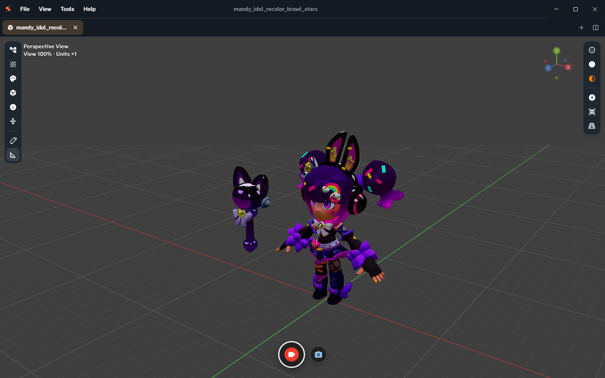
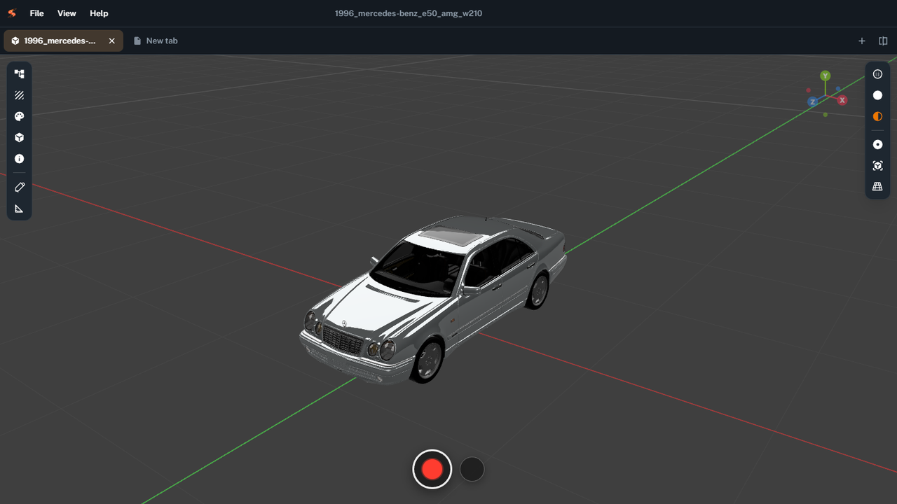
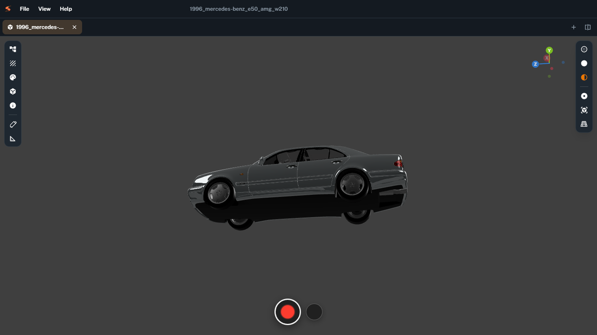
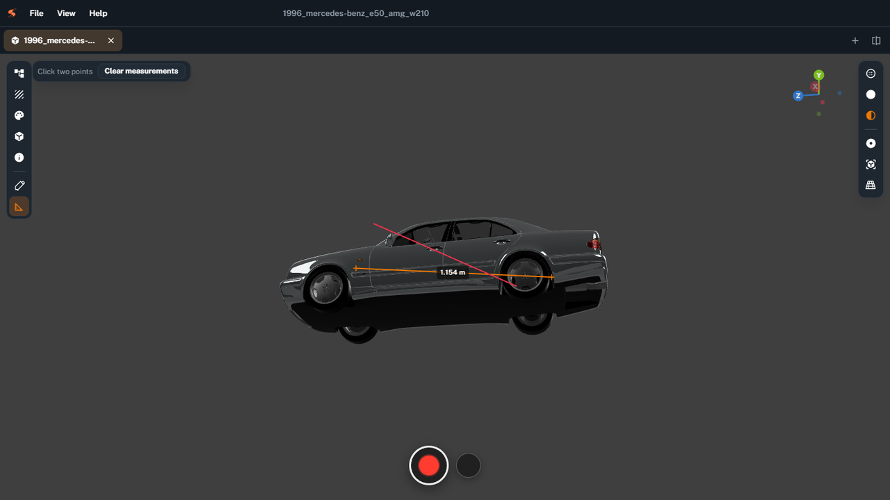
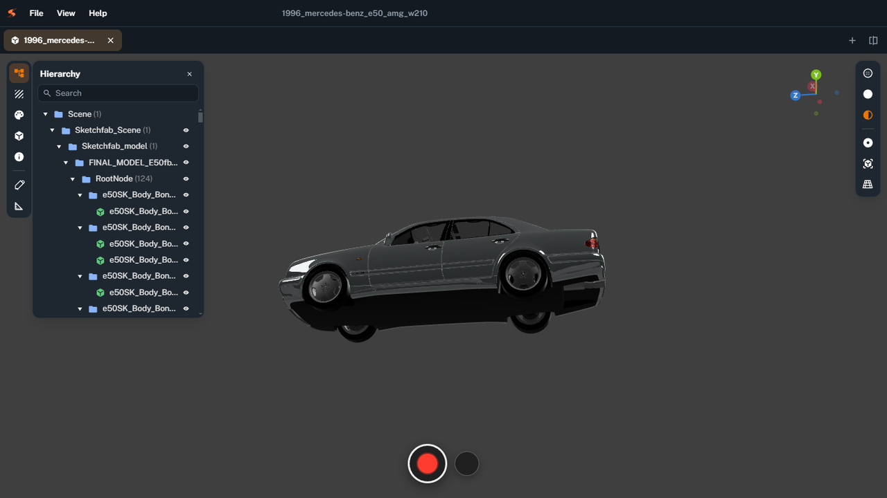
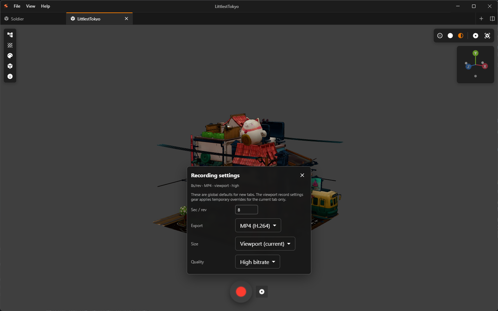
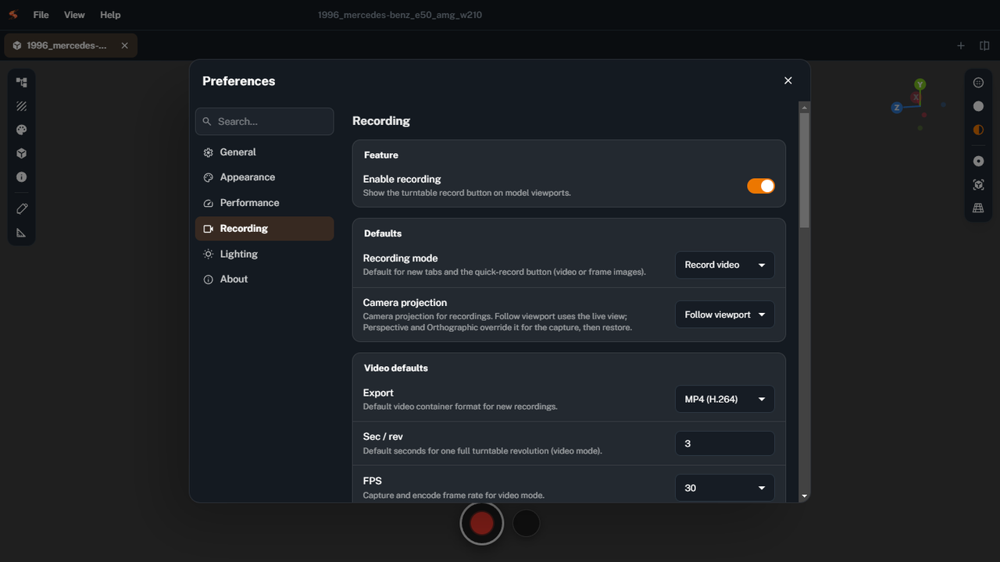
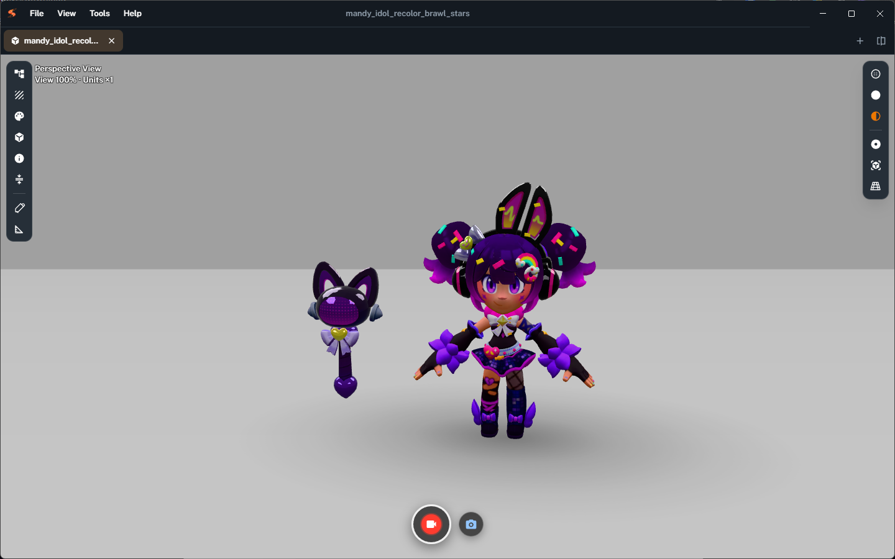

SwiftMesh User Guide
SwiftMesh is a desktop app for Windows and macOS for viewing local 3D models, inspecting scene data, and capturing a one-revolution turntable as video or stills. Supported formats: .glb, .gltf, .obj, and .fbx.
1. Overview
- Open local models from the File menu, empty-state button, drag-and-drop, or Open Recent.
- Work in one or more tabs; optionally split the workspace.
- Inspect Hierarchy, Textures, Materials, Geometries, and Info; Reduce mesh; Annotate or Measure in the viewport.
- Capture a turntable as video (MP4 / WebM) or stills (frame sequence / spritesheet atlas, optional multi-axis).
- Configure language, themes, performance, recording defaults, lighting, and updates in Preferences.

Prefer the Windows NSIS installer from GitHub Releases for in-app auto-update
(Windows reads latest.yml).
macOS builds are not code-signed: install from the .dmg, then check for updates in the app and download a newer DMG from Releases.
Portable Windows builds are not the update target. See the product page if Gatekeeper reports the app as damaged.
2. Opening models
- File → Open… (Ctrl+O / ⌘O) opens a system file dialog.
- On an empty tab, use Open local file.
- Drag and drop a model onto the viewport (disabled while recording or exporting).
- File → Open Recent lists recent absolute paths; use Clear Recent to empty the list.
- On Windows, file associations can open
.glb/.gltf/.obj/.fbxwith SwiftMesh (“Open with”). On macOS, use Open With or set SwiftMesh as the default app for those types.
For .gltf and .obj with external buffers, materials, or textures,
keep companion files next to the model so SwiftMesh can resolve them from the same folder.
For .fbx, sibling textures and a {name}.fbm folder are optional (missing maps do not block opening).

3. Tabs & layout
- Click + to create a new tab.
- Drag tabs to reorder; you can also move tabs between split panes.
- Tab context menu: Close, Close Others, Close to the Right, Close All, Split Right, Split Down, Reveal in File Explorer.
- Ctrl+F4 closes the active tab.
- Ctrl+\ splits right; Ctrl+Alt+\ splits down.
- Shift+Alt+R reveals the current model in File Explorer when a local path is available.
If Confirm before closing tabs is enabled in Preferences, SwiftMesh asks before closing tabs that still have a model loaded.
4. Viewport & camera
Navigation
- Left mouse button — orbit / rotate
- Middle mouse button — dolly / zoom
- Right mouse button — pan
Projection
Use the camera projection control to Switch to orthographic or Switch to perspective. Fit-on-load, selection fit, orbit zoom, and the nav gizmo work in both projections.
Shading
Use the shading toolbar to switch between Wireframe, Solid, and Material (default).
Lighting & camera popovers
- Lighting (per tab, temporary): Studio (IBL), Classic, or Neutral; Exposure; Env intensity (Studio); Reset.
- Camera (per tab, temporary): position, target, FOV; Reset.
Viewport lighting overrides are temporary and are not written back to Preferences. Defaults for new tabs come from Preferences → Lighting.
Nav gizmo
The view-orientation gizmo (±X / ±Y / ±Z) appears when Preferences → Appearance → Model Theme is set to Professional. It is hidden in Simple theme and while recording.

Annotate & Measure
The left viewport toolbar includes two overlay tools. Hits work on the model, the ground plane, or the view plane; overlay lines are not occluded by the mesh.
- Annotate — draw in the viewport; pick a Stroke color; Clear annotations removes them.
- Measure — click two points for a distance; Clear measurements removes them.

Status bar
Shows Ready / Loading / Recording / Exporting / No model. Toggle with View → Toggle Status Bar (Ctrl+B) or Preferences → Show status bar.
5. Inspect panels
Open panels from the viewport toolbar. Panels are resizable and dock beside the 3D view.
| Panel | What you can do |
|---|---|
| Hierarchy | Search the scene tree; select meshes/groups; show or hide nodes. |
| Textures | Browse textures, preview size/map slots, see materials using each texture, download PNG. |
| Materials | Inspect opacity, color, maps; clicking can select a related mesh. |
| Geometries | Review vertices, attributes, meshes, triangles; select meshes. |
| Info | Summary counts: meshes, geometries, materials, textures, vertices, triangles, estimated draw calls, animations. |
| Reduce mesh |
Weld and decimate static meshes with a keep-ratio slider. The panel shows target vs actual triangle counts.
Skinned meshes, morph-target meshes, and tiny meshes are skipped. Welding rebuilds normals, so sharp authored edges can look smoother.
The slider ratio is a target, not a guarantee. Closing the panel restores the original mesh. Export writes a new .glb (preview only; does not overwrite the open file).
|
| Encrypt Model… |
File menu action that packs the current local model (including OBJ/MTL textures or glTF sidecars) into a password-protected .smsh file.
Recipients open it in SwiftMesh and enter the password (shared out of band). You can disable GLB export, turntable video, image/atlas export, and texture/structure inspect; optionally set a validity period (1 / 3 / 7 / 30 days, permanent, or a custom date) and a watermark that appears in the viewport and baked capture frames.
This is encrypted storage to prevent casual opening and accidental sharing — not strong DRM. Anyone who unpacks the app can still bypass permission checks.
While an unlocked .smsh is open, SwiftMesh asks the OS to reduce window capture (setContentProtection) — best-effort only, not hard DRM.
|
| Encrypt Models… |
Batch-encrypt multiple local models with the same password, permissions, and validity. Progress shows the current file; failures are listed without aborting the rest.
Choose save beside each source or a single output folder. Already-.smsh files are skipped. Reduce-mesh export cannot be encrypted in one step — encrypt the original source instead.
|
When a .glb, .gltf, or .fbx file includes animation clips,
a playback bar appears at the bottom of the viewport (play / pause, clip list, scrub, loop).
Playback does not start automatically.

6. Recording
Recording requires a loaded model in the desktop app. Circular buttons on the viewport start capture; all other parameters live in Preferences → Recording.
- Start video recording captures one turntable revolution as MP4 and/or WebM. If a clip is playing, skeletal animation is sampled into the same frames; if paused, the current pose is held.
- Start image export captures stills (frame sequence and/or spritesheet atlas).
- Use Switch to frame images / Switch to video recording to change mode on the current tab only.
- A progress dialog can Stop recording (confirm Stop recording now?).

Shared defaults
These settings apply to every open tab. A job already in progress keeps the snapshot from when it started.
| Control | Options |
|---|---|
| Recording mode | Record video, or Frame images (default for new tabs and the quick-record button) |
| Camera projection | Follow viewport, Perspective, or Orthographic (overrides the live view for capture, then restores) |
Video defaults
| Control | Options |
|---|---|
| Sec / rev | Seconds per revolution |
| FPS | 24 / 30 / 60 |
| Export | MP4 (H.264), WebM, or MP4 + WebM |
| Size | Viewport; PC 720p / 1080p / 1440p / 4K; several mobile presets; Custom |
| Quality | Standard, High bitrate, Near-lossless (compatible) |
MP4 encoding uses the bundled ffmpeg binary.
Image defaults
| Control | Options |
|---|---|
| Frame count | Frames for one revolution |
| Frame sequence | Export individual frames (folder or ZIP) |
| Spritesheet atlas | Pack frames into one or more sheets |
| Image format | PNG, JPEG, or WebP |
| Multi-axis (pitch batch) | One yaw turntable at each pitch angle; writes a MultiAxisManifest JSON |
Multi-axis stills ask once for an output folder and filename prefix (not once per axis). Select at least frame sequence or atlas before starting an image export.
Saving
- Video and image exports each have their own Default save location: Ask each time, or Specified folder.
- While recording or exporting, model interaction is locked and a progress dialog may appear.
- Disable Enable recording in Preferences to hide viewport record controls.
7. Preferences
Open with Preferences… (Ctrl+, / ⌘,). Use the search box to filter settings. Edits stay in a draft until you Save; Discard reverts them. Language and UI / model themes preview live and restore if you close without saving. Closing with unsaved changes asks Save changes? (Save / Discard / Don't save).

General
| Setting | Purpose |
|---|---|
| Language | English or 简体中文 for menus, dialogs, and labels (live preview) |
| On startup | Blank window, restore last session, or open most recent file |
| Recent files limit | Maximum Open Recent entries (5–30) |
| Show status bar | Default visibility of the bottom status bar |
| Confirm before closing tabs | Ask before closing tabs that have a model |
| Reset all preferences | In-app confirm, then writes immediately; language is kept |
Appearance
- Interface theme — SwiftMesh (default), Dark, Business, Night
- Model Theme — Simple or Professional (controls nav gizmo availability)

Performance
| Setting | Purpose |
|---|---|
| Anti-aliasing (MSAA) | Smoother edges; remounts the 3D view when changed |
| Maximum texture size | Automatic, or cap at 2048 / 4096 / 8192 px |
| Auto-normalize model units | Scale cm/mm assets to meter-sized display units |
| Reload on file change | Reload a tab when its file changes on disk |
| Cache / temp folder | System temporary directory or a specified folder |
| Telemetry | Preference only — no telemetry is collected yet |
Recording
Global defaults for every tab: enable recording, mode, camera projection, video and image options, and save locations. The viewport button can still switch video vs images per tab. A recording or export already in progress keeps the settings it started with.
Lighting
Defaults for new tabs: Mode (Studio / Classic / Neutral), Exposure, Env intensity (Studio). Viewport lighting popover overrides are temporary.
About
- Author
- Repository — open the GitHub project in your browser
- Open-source license — MIT
- Updates — check for a newer GitHub Release (see next section)
8. Updates
Updates live in Preferences → About for packaged installs.
- Windows NSIS: Check for updates downloads when a newer release exists. Use Relaunch application to install. Auto-update on: background check/download; off: only the button checks.
- macOS: the app checks GitHub Releases and prompts you to Download from GitHub (install the DMG yourself). There is no Auto-update toggle on macOS because unsigned builds cannot install updates in-app.
Development builds (pnpm run dev) cannot install updates.
Portable Windows builds are not the update target.
9. Keyboard shortcuts
| Shortcut | Action |
|---|---|
| Ctrl+O / ⌘O | Open… |
| Ctrl+, / ⌘, | Preferences… |
| Ctrl+B / ⌘B | Toggle Status Bar |
| Ctrl+F4 | Close active tab |
| Ctrl+\ | Split Right |
| Ctrl+Alt+\ | Split Down |
| Shift+Alt+R | Reveal in File Explorer / Finder |
| Esc | Close open title-bar menus |
On macOS, Open, Preferences, and Status Bar shortcuts use ⌘ instead of Ctrl. View menu also includes Reload, zoom, and Toggle Full Screen.
10. Limitations
- Local files only — no remote URL or cloud loading.
- Formats:
.glb,.gltf,.obj,.fbx, and encrypted.smsh. The FBX loader covers ASCII and common binary meshes, skins, Lambert/Phong and some PBR, and clips — not Maya NURBS, every newer binary variant, or complex shaders. Coordinates are converted to Y-up by the loader. .smshhas no online license check or remote revocation — password, local calendar expiry, and honor-system permissions only.- Reduce mesh exports a preview
.glbonly; there is no “encrypt decimated result” path, because that cannot match encrypting the original OBJ/MTL/texture (or other source) bytes on disk. - Window content protection for open
.smshtabs only lowers capture odds; it does not block all OS or hardware capture tools. - Recording and encoding require the desktop app (bundled ffmpeg for MP4).
- In-app auto-update targets packaged Windows NSIS installs only. macOS checks Releases and you install the DMG manually. Portable and dev sessions cannot auto-update.
- One turntable revolution per video pass; image mode can also export a sequence, atlas, or multi-axis batch.
- Telemetry preference does not send data yet.